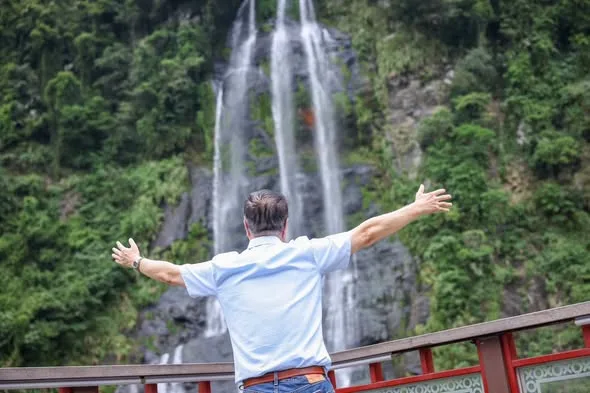
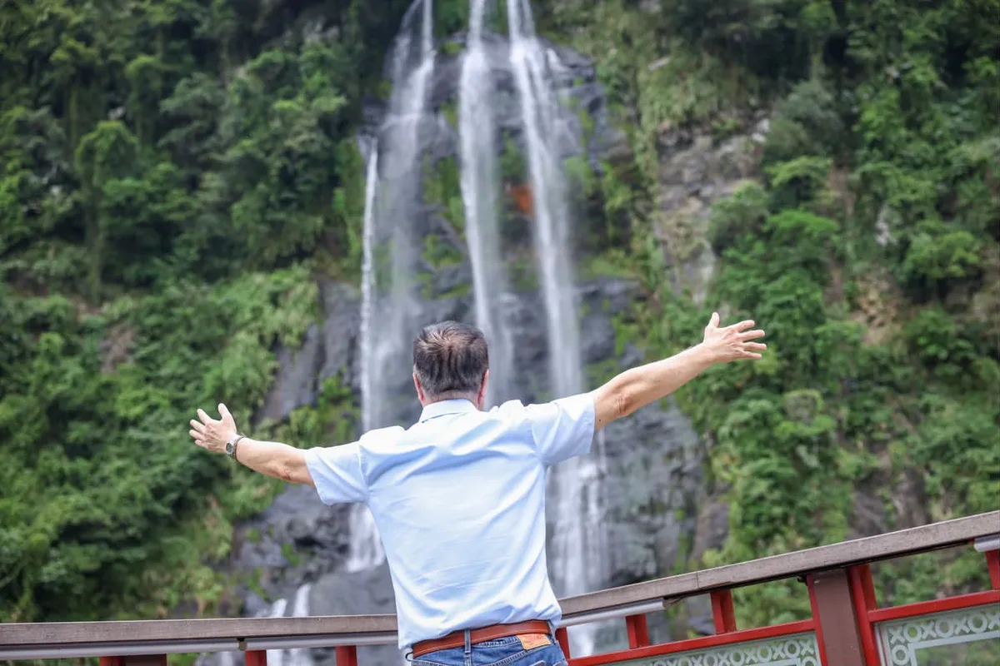
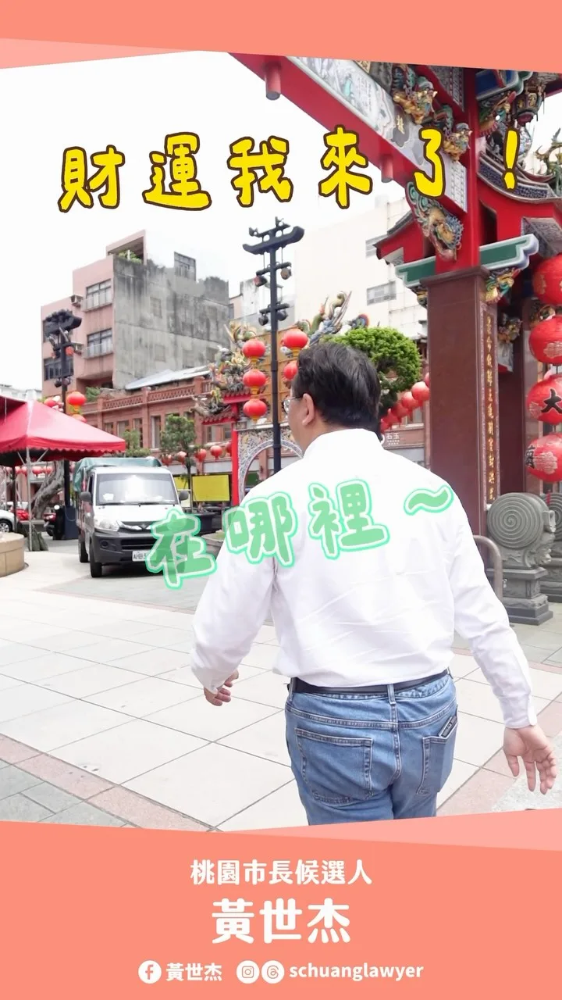
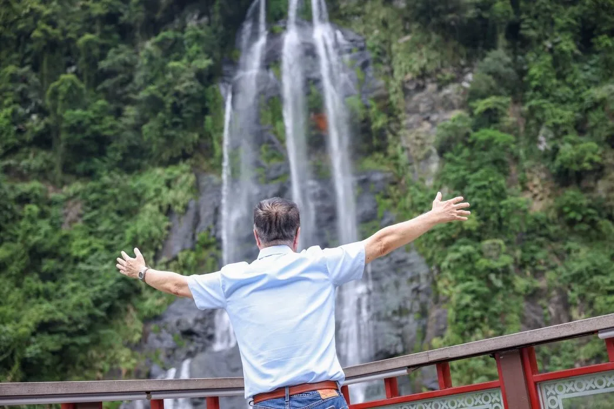
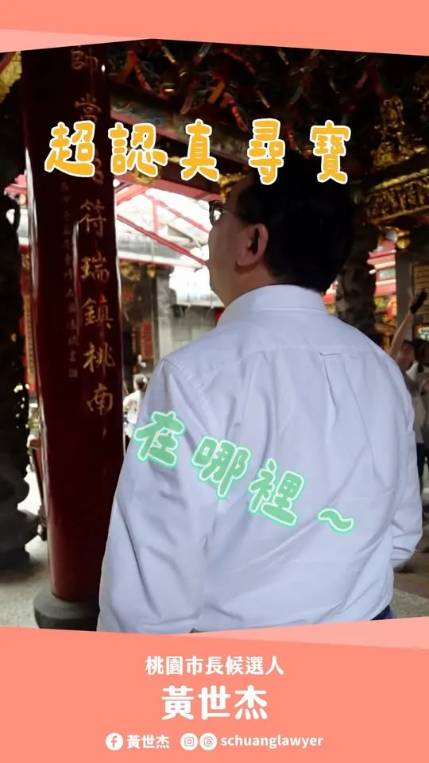

蘇巧慧su.chiaohui
@su.chiaohui:新北有山有海、有城市有鄉鎮，而金山正是聚集了新北所有的美好，多元又豐富。前幾天我和 @bikhimhsiao 美琴副總統一起到金山和在地農會、團隊、青年夥伴面對面聊聊對金山未來的想像。 有些人從小在金山長大，有些人是離開之後又回來，有些則是從外地搬來，但大家都在金山找到自己喜歡的生活樣貌，也都希望讓這裡的美，被更多人看見。 我們一起努力，讓新北成為台灣人安居樂業的首選，外國人一生必訪的城市。
Posts
@su.chiaohui:新北有山有海、有城市有鄉鎮，而金山正是聚集了新北所有的美好，多元又豐富。前幾天我和 @bikhimhsiao 美琴副總統一起到金山和在地農會、團隊、青年夥伴面對面聊聊對金山未來的想像。 有些人從小在金山長大，有些人是離開之後又回來，有些則是從外地搬來，但大家都在金山找到自己喜歡的生活樣貌，也都希望讓這裡的美，被更多人看見。 我們一起努力，讓新北成為台灣人安居樂業的首選，外國人一生必訪的城市。
中秋連假來三重看大戲！唐美雲歌仔戲團經典大戲《 #龍鳳情緣》精彩登場！ 就在中秋連假！國寶級歌仔戲天后 #唐美雲，將與永遠的娘子 #許秀年 老師、百變精靈 #小咪 老師及 #唐美雲歌仔戲團 的專業演員們，帶來經典戲碼《龍鳳情緣》，透過才子佳人終成眷屬的精彩故事，祝福大家中秋佳節事事圓滿！ 這是《龍鳳情緣》首次在新北戶外公開演出，機會非常難得！邀請大家一起來看戲，歡喜過中秋❤️ 📍中秋戲曲之夜《龍鳳情緣》 時間｜9/27（日）19:00 地點｜三重向日葵廣場（市前街與中正北路交叉口）

開著我的專屬 #胖卡，吹著海風來到 #梓官蚵仔寮。這裡的海鮮「尚青」，我最愛來到這裡看海景、享受美食。 胖卡穿越大街小巷，沿途向鄉親問好，也邀請大家：9/22（二）晚上 7 點，一起來 #梓官大舍甲大壽宮 聽我們「廟口那卡西」、作伙唱歌！ 但是，9/19（六）下午3點 捷運鳳山西站的 「#大風起」造勢先來相會！


香火萬年佑黎民，總統墨寶獻神祇💐 超過240年歷史的大寮朝中宮是地方信仰中心，陪伴一代又一代鄉親，見證大寮一路發展、成長。 一間廟宇守護地方，一座城市照顧每一個人的生活。今天來到朝中宮參香祈福，也代表 賴清德 總統致贈「仁德濟民」墨寶，感謝朝中宮長年守護地方、凝聚鄉親的力量。 這些年，大寮持續向前，從道路、排水、公園，到社會住宅、國道七號、捷運紅線延伸等重大交通建設，都有賴中央的支持，地方民眾的合作。 祈求玄天上帝庇佑台灣風調雨順、國泰民安。我會一直把鄉親的需要放在心上，讓不同世代都能在高雄安心生活，也願朝中宮香火萬年、神庥廣被。 高雄市議員 李雨庭 洪村銘 大寮林園要改變 ＃厝邊阿中張耀中


今天到烏來，看烏來瀑布，談接下來「烏來台車觀光」再升級的方向。 年輕夥伴說我後腦勺的「川」，似乎呼應了後面的瀑布，倒真是「川流不息」。


讓世界看見高雄，也讓高雄成為世界客家人的家！ 上週末參加「#世界客屬總會高雄分會暨客屬同鄉會聯合會員大會」，和許多長期為客家文化努力的前輩與鄉親相聚。 這些年走遍高雄，我深刻感受到，客家文化早已是高雄不可或缺的一部分，從美濃、杉林、甲仙等客庄，再到都會區客家人口，到許多來到高雄打拚、落地生根的客家鄉親，大家共同寫下的，就是高雄這座城市的故事。 我認為，客家文化不能只是被保存的文化，更應該成為高雄向世界介紹自己的文化。還記得高雄上一次舉辦世界客屬懇親大會，已經是1992年的事，當年正是由世界客屬總會高雄分會承辦。如今全球客家鄉親遍布世界各地，高雄更有條件成為國際客家交流的重要城市，讓更多人透過高雄認識台灣客家文化。 未來我希望把文化、產業、觀光與青年真正串連起來，不只是保存客家文化，更要讓客家美食、農產、工藝與創意產業走向市場與國際；不只是推廣客語，更要讓年輕人願意學、願意用；不只是辦活動，更要創造機會，讓客家文化成為年輕世代投入地方創生與創業發展的重要力量。 我也向大家承諾，未來將持續推動客語傳承、客庄振興、客家影視與音樂發展，並爭取在高雄舉辦世界客家博覽會，讓世界看見高雄客家文化的深厚底蘊與創新能量。 文化的傳承，不是把過去留在場館裡，而是讓下一代願意接過來、繼續走下去，讓高雄客家文化有根、有聲音、有舞台，更有未來。 #高雄 #客家文化


✨小英總統來「亭妃競總」開箱！驚艷從來沒見過這麼有美感及設計感的競選總部！ 蔡英文總統今天來到陳亭妃競選總部，從打卡區到親自體驗AI動畫政見、當走進「妃熊幸福」專區，還大讚：「我全台跑透透，從沒看過這麼有美感、設計感的競選總部！」讓小英總統覺得最不可思議的就是「妃熊幸福」親子氣墊區 從台南400年的文化底蘊，到AI科技、農漁、觀光、福利與交通，再到可愛的妃妃泰迪熊，這裡不只是競選總部，更是陳亭妃心中「美學台南」的實踐。 歡迎大家來永康區水漾路520號，走一趟「台南妃熊幸福奇幻旅程」！ 開箱影片我們拭目以待👀

@schuanglawyer:桃園大廟景福宮「尋找吐金幣烏龜」！一起來找財運、添好運🐢 這次帶大家來解鎖桃園景福宮隱藏版小遊戲「尋找一隻會吐金幣的烏龜！」據說只要在廟裡找到它，就能帶來滿滿的好運與財運喔✨ 歡迎大家有空一起來參拜、尋寶，為自己招財納福！趕快揪朋友一起來挑戰💖

@su.chiaohui:金牌廚師挺巧慧！感謝上千位餐飲好朋友相挺！我也向大家報告未來努力的方向： 🌟跨界串連、強強聯手，打造新北美食繁星 ⚙️推廣智慧餐飲、職務再設計緩解缺工 🤝修正制度，守護市民飲食健康 新北擁有最多元的美食文化，我們一起努力，把新北的好味道推向更大的舞台，也讓更多人因此認識新北、愛上新北！

@prof.kochihen:日前，我特別拜訪知名音樂人，也是我的競選歌曲《世界高雄》製作人吳坤龍老師。 聊著聊著才發現，我們兩個其實有不少相同之處：同樣屬虎，也都曾站上金鐘獎的舞台。 我從教育、媒體走進公共服務；坤龍老師則從音樂出發，在高雄扎根37年。走上不同的人生道路，卻都相信一件事：好的作品需要時間累積，一座好的城市，也需要不斷創新、持續向前。 從廣播、廣告、布袋戲，到許多職棒的應援歌曲，像是近年大家耳熟能詳的《台灣尚勇》；老師一路把工作室留在高雄，更創下連續24年入圍廣播金鐘獎的紀錄，獲得15座金鐘獎肯定。 近年走進運動賽場，啦啦隊、球員應援曲，幾萬名球迷一起唱跳吶喊，早已成為大家熟悉的風景。這套充滿熱情與感染力的應援文化，坤龍老師正是重要的幕後推手之一。 這次，我很榮幸邀請坤龍老師，為我們打造競選歌曲。在他的精心製作下，《世界高雄》希望大家從旋律裡，聽見高雄的陽光、海港的開闊、這座城市的熱情；更希望把運動賽場上「有志一同」的精神展現出來。
新北有山有海、有城市有鄉鎮，而金山正是聚集了新北所有的美好，多元又豐富。前幾天我和 #蕭美琴 副總統一起到金山和在地農會、團隊、青年夥伴面對面聊聊對金山未來的想像。 有些人從小在金山長大，有些人是離開之後又回來，有些則是從外地搬來，但大家都在金山找到自己喜歡的生活樣貌，也都希望讓這裡的美，被更多人看見。 未來如果有機會，我會打造 #全運具友善 的交通路網，讓外地人不論開車、騎車、搭乘大眾有運輸工具，都能更方便、安心的來旅遊；更要 #串連山海資源，集結大家的特色，舉辦城市級活動，打造一個屬於新北獨一無二的觀光品牌。 我們一起努力，讓新北成為台灣人安居樂業的首選，外國人一生必訪的城市。

@prof.kochihen:開著我的專屬 胖卡，吹著海風來到 梓官蚵仔寮。這裡的海鮮「尚青」，我最愛來到這裡看海景、享受美食。 胖卡穿越大街小巷，沿途向鄉親問好，也邀請大家：9/22（二）晚上 7 點，一起來 #梓官大舍甲大壽宮 聽我們「廟口那卡西」、作伙唱歌！ 但是，9/19（六）下午3點 捷運鳳山西站的 「#大風起」造勢先來相會！


開著我的專屬 #胖卡，吹著海風來到 #梓官蚵仔寮。這裡的海鮮「尚青」，我最愛來到這裡看海景、享受美食。

@hammer__lee:今天到烏來，看烏來瀑布，談接下來「烏來台車觀光」再升級的方向。 年輕夥伴說我後腦勺的「川」，似乎呼應了後面的瀑布，倒真是「川流不息」。

客家山城作基地，#大埔客家 走出去❗️ 臺中擁有超過50萬客家鄉親，是城市不可或缺的文化底蘊。為了讓客家文化走入日常、永續扎根，未來我們將以山城為核心，重現 #東勢舊火車站 的修澤蘭經典風貌，並串聯周邊自行車道與巧聖仙師廟，打造文化與產業中心。 同時，我們也會整合新丁粄節、龍神山水祭等四季節慶，讓山城四季都有亮點；擴大舉辦 Hakka Sounds 音樂節，讓客語透過流行音樂走入年輕世代；並推廣在地優質農產與大埔客家菜餚，打造專屬的「臺中味」❤️ 最重要的是，大埔腔絕不能斷代！ 未來我們將善用AI數位科技進行語音保存，透過多元互動降低學習門檻，讓母語自然融入生活。 我們將繼續深耕地方，讓世界看見臺中客庄的美好。有閒來尞！ #臺中啟程 #打造旗艦城 #大埔腔 #山城 #客家文化 #臺中味 #TaichungWay #文化味

高雄的未來不會只有市區的繁華，也會有海線的光彩，我們一起努力，讓薪水漲上去、把人留下來、高雄拚世界！ 今晚來到 #彌陀 彌壽宮廟口開講，談到彌陀，是虱目魚的故鄉，也是高雄海線一顆閃亮的珍珠。 下午到海尾橋走走，看著夕陽慢慢落下，真的很美。我一路在想，這麼好的地方，為什麼還有那麼多問題，幾十年來始終沒有真正解決？淹水、交通、觀光發展，鄉親及議員也爭取了很多年，卻還是緩步向前。 我看到的彌陀，有很多認真打拚的人。有堅守漁業的鄉親，用雙手養活一家人；有返鄉的年輕人，自己畫地圖、找景點、推美食，希望讓更多人認識自己的故鄉，這些努力，不該只是靠鄉親自己苦撐。 這些年，高雄市區和縣區的資源分配，大家心裡感到不公平。市區有演唱會、有大型建設，縣區也該被看見；彌陀的孩子也該與市區孩子機會相同、有競爭力。 未來有機會承擔市政，我一定努力讓市區與縣區的發展更均衡，讓每一個角落都被公平對待。 我認為，高雄最重要的，就是薪水漲上去、把人留下來，高雄才能拚全世界！高雄給民進黨40年的時間已經夠多，未來4年，應該換人試試看，給我一個機會，照顧好大家。 今晚也要特別感謝長年深耕大岡山的 陸淑美 議員，如今將交棒給 黃韻涵，還有持續為海線發聲的 宋立彬 高雄市議員 方信淵-高雄市議員，以及所有認真服務的里長們。 基層有里長打拚，議會有議員監督，市政交給我。我會用媽媽照顧孩子的心情來照顧大家，讓更多人看見這片土地的美，也讓下一代以家鄉為榮。

A "Crab-tivating" Encounter in Wanli! ft. President Lai Ching-te and President Tsai Ing-wen

桃園大廟景福宮「尋找吐金幣烏龜」！一起來找財運、添好運🐢 這次帶大家來解鎖桃園景福宮隱藏版小遊戲「尋找一隻會吐金幣的烏龜！」據說只要在廟裡找到它，就能帶來滿滿的好運與財運喔✨ 歡迎大家有空一起來參拜、尋寶，為自己招財納福！趕快揪朋友一起來挑戰💖

金牌廚師挺巧慧！打造 #新北美食繁星！ 感謝 #水蛙師張和錦 榮譽總會長，#張和漢 總會長，台菜王子黃景龍 副總會長，以及上千位餐飲好朋友相挺！我也向大家報告未來努力的方向： 🌟跨界串連、強強聯手，打造新北美食繁星 串連餐飲、影視音、設計與商圈，推出 #特色美食地圖，讓大家循著在地好滋味深遊新北！ ⚙️推廣 #智慧餐飲、職務再設計緩解缺工 導入智慧管理產品，讓科技搞定重複工作；媒合資深職人，提升營運效率。 🤝修正制度，守護市民飲食健康 比照行政院規格，修正《#新北市食品安全衛生管理自治條例》；推動 #3章1Q 延伸實施，讓民眾吃得更安心健康。 新北擁有最多元的美食文化，我們一起努力，把新北的好味道推向更大的舞台，也讓更多人因此認識新北、愛上新北！

日前，我特別拜訪知名音樂人，也是我的競選歌曲《世界高雄》製作人 #吳坤龍 老師。 聊著聊著才發現，我們兩個其實有不少相同之處：同樣屬虎，也都曾站上金鐘獎的舞台。 我從教育、媒體走進公共服務；坤龍老師則從音樂出發，在高雄扎根37年。走上不同的人生道路，卻都相信一件事：好的作品需要時間累積，一座好的城市，也需要不斷創新、持續向前。 從廣播、廣告、布袋戲，到許多職棒的應援歌曲，像是近年大家耳熟能詳的《台灣尚勇》；老師一路把工作室留在高雄，更創下連續24年入圍廣播金鐘獎的紀錄，獲得15座金鐘獎肯定。 近年走進運動賽場，啦啦隊、球員應援曲，幾萬名球迷一起唱跳吶喊，早已成為大家熟悉的風景。這套充滿熱情與感染力的應援文化，坤龍老師正是重要的幕後推手之一。 這次，我很榮幸邀請坤龍老師，為我們打造競選歌曲。在他的精心製作下，《世界高雄》希望大家從旋律裡，聽見高雄的陽光、海港的開闊、這座城市的熱情；更希望把運動賽場上「有志一同」的精神展現出來。 他也跟我分享，這首歌的設計，就是希望讓每一位第一次聽到的人，都能很快聽懂、加入，最後一起唱、一起喊。 「從一首歌，變成一群人的共同記憶。」這句話，我很喜歡。 我希望打造的高雄也是如此。不只有硬體建設的累積，更是許多人的創意與共同記憶，一點一滴堆疊出來城市的文化。 高雄有很多像坤龍老師一樣，長年扎根在這裡、非常優秀，卻未必總是站在鎂光燈前的文化工作者。未來，我希望高雄不只是把人潮帶進來，更要把產業留下來、把人才留下來，讓高雄自己的創作者被更多人看見，甚至走向世界。 《世界高雄》是一首競選歌曲，更是一首我們寫給高雄的應援曲。 從夢想海港出發，帶著陽光與熱情。「做伙拚出咱的世界舞台！」 有志一同，我們一起為高雄加油，也一起讓高雄走向世界！
@su.chiaohui:中秋連假來三重看大戲！唐美雲歌仔戲團經典大戲《龍鳳情緣》精彩登場！ 就在中秋連假！國寶級歌仔戲天后唐美雲，將與「永遠的娘子」許秀年老師、「百變精靈」小咪老師及唐美雲歌仔戲團的專業演員們，帶來經典戲碼《龍鳳情緣》，透過才子佳人終成眷屬的精彩故事，祝福大家中秋佳節事事圓滿！ 這是《龍鳳情緣》首次在新北戶外公開演出，機會非常難得！邀請大家一起來看戲，歡喜過中秋❤️ 📍中秋戲曲之夜《龍鳳情緣》 時間｜9/27（日）19:00 地點｜三重向日葵廣場（市前街與中正北路交叉口）

開著我的專屬 #胖卡，吹著海風來到 #梓官蚵仔寮。這裡的海鮮「尚青」，我最愛來到這裡看海景、享受美食。 胖卡穿越大街小巷，沿途向鄉親問好，也邀請大家：9/22（二）晚上 7 點，一起來 #梓官大舍甲大壽宮 聽我們「廟口那卡西」、作伙唱歌！ 但是，9/19（六）下午3點 捷運鳳山西站的 「#大風起」造勢先來相會！

香火萬年佑黎民，總統墨寶獻神祇💐 超過240年歷史的大寮朝中宮是地方信仰中心，陪伴一代又一代鄉親，見證大寮一路發展、成長。 一間廟宇守護地方，一座城市照顧每一個人的生活。今天來到朝中宮參香祈福，也代表 賴清德 總統致贈「仁德濟民」墨寶，感謝朝中宮長年守護地方、凝聚鄉親的力量。 這些年，大寮持續向前，從道路、排水、公園，到社會住宅、國道七號、捷運紅線延伸等重大交通建設，都有賴中央的支持，地方民眾的合作。 祈求玄天上帝庇佑台灣風調雨順、國泰民安。我會一直把鄉親的需要放在心上，讓不同世代都能在高雄安心生活，也願朝中宮香火萬年、神庥廣被。 高雄市議員 李雨庭 洪村銘 大寮林園要改變 ＃厝邊阿中張耀中

今天到烏來，看烏來瀑布，談接下來「烏來台車觀光」再升級的方向。 年輕夥伴說我後腦勺的「川」，似乎呼應了後面的瀑布，倒真是「川流不息」。

客家山城作基地，#大埔客家 走出去❗️ 臺中擁有超過50萬客家鄉親，是城市不可或缺的文化底蘊。為了讓客家文化走入日常、永續扎根，未來我們將以山城為核心，重現 #東勢舊火車站 的修澤蘭經典風貌，並串聯周邊自行車道與巧聖仙師廟，打造文化與產業中心。 同時，我們也會整合新丁粄節、龍神山水祭等四季節慶，讓山城四季都有亮點；擴大舉辦 Hakka Sounds 音樂節，讓客語透過流行音樂走入年輕世代；並推廣在地優質農產與大埔客家菜餚，打造專屬的「臺中味」❤️ 最重要的是，大埔腔絕不能斷代！ 未來我們將善用AI數位科技進行語音保存，透過多元互動降低學習門檻，讓母語自然融入生活。 我們將繼續深耕地方，讓世界看見臺中客庄的美好。有閒來尞！ #臺中啟程 #打造旗艦城 #大埔腔 #山城 #客家文化 #臺中味 #TaichungWay #文化味


士林華榮市場，從早到晚，有兩種完全不同的熱鬧。 ⠀ 早上是菜市場，蔬菜、鮮魚、肉品，撐起士林人的一日三餐；傍晚攤位換班，甜不辣、水煎包、香腸陸續開張，成為在地人才知道的美食街。不少攤商在這裡做了四、五十年，顧的不只是生意，也是幾代士林人的味覺記憶。 ⠀ 今天走進市場，沿路聽到的招呼聲，就是傳統市場最珍貴的人情味。攤商記得熟客要買什麼、居民也都願意停下來聊幾句生活。 ⠀ 我有一位助理的阿媽從小都會帶他來「華榮街」，聽說前天阿媽才在講「那麼小條，沈伯洋不會來啦！」原來，是因為阿媽前幾年開刀後不太出遠門，一直在等我們來。 ⠀ 我們一定會盡全力，走遍台北的大小市場。因為在市場，你可以聽見最在地的聲音！ ⠀ 謝謝每一位熱情打招呼、願意停下腳步的攤商與市民，也謝謝我們今天一起出動的士林北投小隊 士林北投林世宗議員、 林延鳳 議員、 陳慈慧 慈續服務 最貼心 議員、 陳賢蔚 議員、鍾佩玲 台北市議員，以及華榮市場自治會莊勝宏會長！ #台北順起來 #你的市長沈伯洋

✨小英總統來「亭妃競總」開箱！驚艷從來沒見過這麼有美感及設計感的競選總部！ 蔡英文 Tsai Ing-wen總統今天來到陳亭妃競選總部，從打卡區到親自體驗AI動畫政見、當走進「妃熊幸福」專區，還大讚：「我全台跑透透，從沒看過這麼有美感、設計感的競選總部！」讓小英總統覺得最不可思議的就是「妃熊幸福」親子氣墊區 從台南400年的文化底蘊，到AI科技、農漁、觀光、福利與交通，再到可愛的妃妃泰迪熊，這裡不只是競選總部，更是陳亭妃心中「美學台南」的實踐。 歡迎大家來永康區水漾路520號，走一趟「台南妃熊幸福奇幻旅程」！ 開箱影片我們拭目以待👀 #蔡英文 #小英總統 #陳亭妃 #台南市長候選人 #美學台南 #妃熊幸福 #姐姐市長 #咱作伙寫歷史

桃園大廟景福宮「尋找吐金幣烏龜」！一起來找財運、添好運🐢 這次帶大家來解鎖桃園景福宮隱藏版小遊戲「尋找一隻會吐金幣的烏龜！」據說只要在廟裡找到它，就能帶來滿滿的好運與財運喔✨ 歡迎大家有空一起來參拜、尋寶，為自己招財納福！趕快揪朋友一起來挑戰💖

金牌廚師挺巧慧！打造 #新北美食繁星！ 感謝「水蛙師」張和錦榮譽總會長，張和漢總會長，「龍師傅」黃景龍副總會長，以及上千位餐飲好朋友相挺！我也向大家報告未來努力的方向： 🌟跨界串連、強強聯手，打造新北美食繁星 串連餐飲、影視音、設計與商圈，推出 #特色美食地圖，讓大家循著在地好滋味深遊新北！ ⚙️推廣 #智慧餐飲、職務再設計緩解缺工 導入智慧管理產品，讓科技搞定重複工作；媒合資深職人，提升營運效率。 🤝修正制度，守護市民飲食健康 比照行政院規格，修正《新北市食品安全衛生管理自治條例》；推動 #3章1Q 延伸實施，讓民眾吃得更安心健康。 新北擁有最多元的美食文化，我們一起努力，把新北的好味道推向更大的舞台，也讓更多人因此認識新北、愛上新北！

大手小手一起畫，讓廟埕充滿色彩與歡笑聲！🎨 尹立 左營楠梓市議員參選人